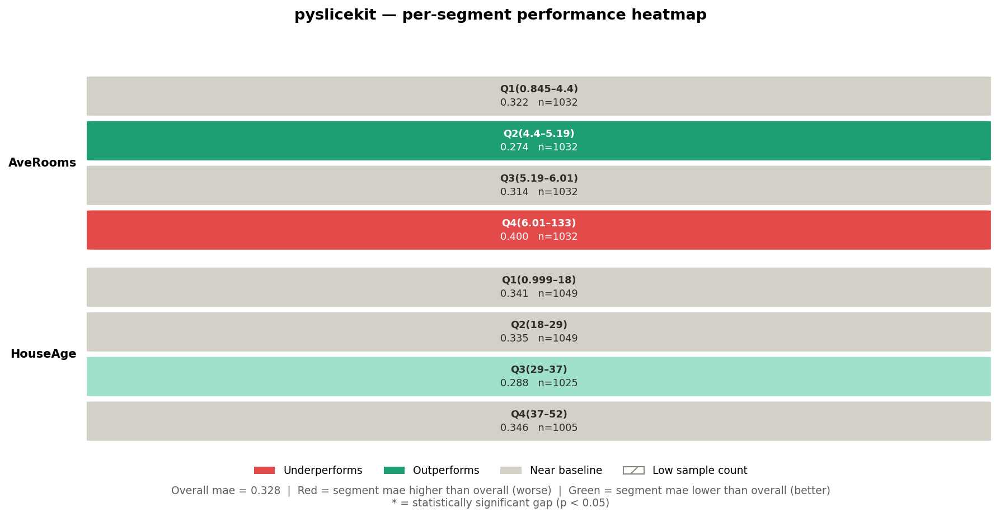
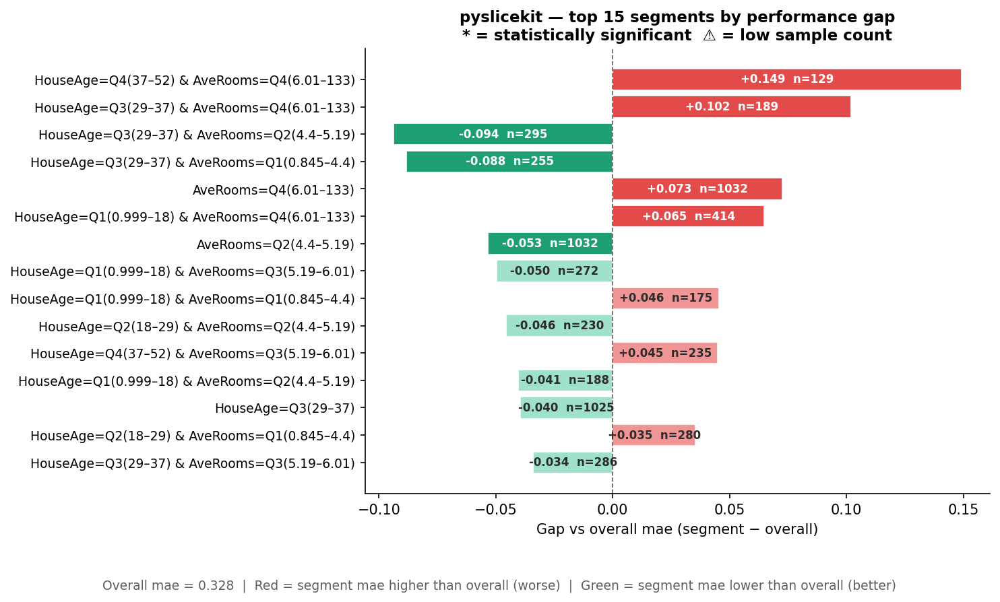
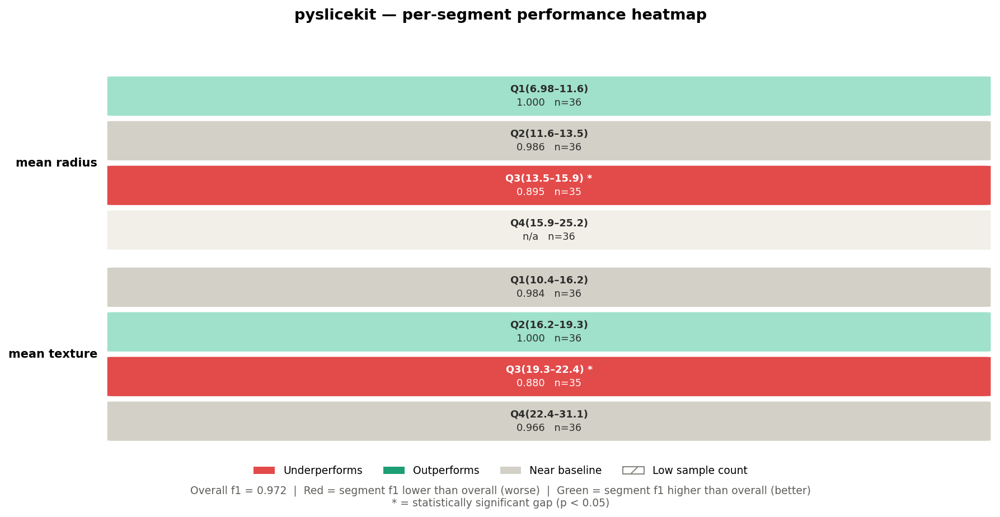
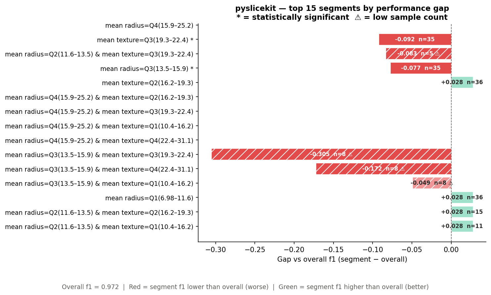

User Guide¶
This guide teaches you everything you need to use PySliceKit confidently — from the core idea, through two complete walkthroughs, to the statistical machinery running under the hood. Read it once and you will never misread a result again.
The Problem with Global Metrics¶
Imagine you deploy a pricing model for real estate, and it boasts an overall Mean Absolute Error (MAE) of $40,000. On paper, it sounds robust. But when you dig into the data, you discover that for houses older than 50 years near the ocean, the MAE balloons to $120,000.
Relying purely on “global” metrics masks critical algorithmic bias, data drift,
and localized underfitting. Finding these edge cases manually by writing endless
Pandas groupby() statements is tedious, non-scalable, and statistically
dangerous — you might mistake random noise in a small sample for a real problem,
or miss a real problem because you never thought to look there.
The PySliceKit Solution¶
PySliceKit acts as an automated detective for your models. Instead of you manually guessing where your model might fail, PySliceKit does five things automatically:
Bins numeric columns: Converts continuous columns like Age or Income into human-readable quartile labels (
Q1(18–34),Q2(34–52), …) so you never have to writepd.cut()yourself.Cross-products features: Combines columns together up to a configurable depth — so
AgeandGeographybecomeAge=Q1 & Geography=North,Age=Q1 & Geography=South, and so on.Applies statistical rigor: Runs the right hypothesis test automatically — Z-Test, Fisher’s Exact, or Bootstrap CI — to ensure a drop in performance is a mathematically real failure, not just noise from a small sample.
Flags low-sample segments: Any segment below
min_samplesis still shown, but is visually hatched so you know to treat it with caution.Enforces a visual contract: In every chart PySliceKit produces, Red always means bad — regardless of whether your metric is Accuracy (higher is better) or MAE (lower is better). You never have to remember which direction the metric goes.
How PySliceKit Processes Your Data¶
Understanding what happens inside pyslicekit.evaluate() makes results much easier
to interpret. Here is the exact sequence of steps:
Step 1 — Validation.
PySliceKit checks every input before doing any work. If y_true and
y_pred have different lengths, if a slice_col does not exist in your
DataFrame, or if the metric string is not supported, you get a specific
PySliceKitValidationError that names the exact problem.
Step 2 — Column pre-processing.
Each column in slice_cols is inspected. Numeric columns (integer or float
dtype) are automatically binned into quartiles using pd.qcut. Categorical
or string columns are used as-is. Columns with more than 20 unique values
trigger a UserWarning — they will still be processed, but they will produce
many segments. You may want to group them first.
Step 3 — Segment construction.
PySliceKit generates every combination of column values up to depth
levels deep. At depth=1, each unique value in each column becomes a
segment. At depth=2, every pair of values across columns is also a
segment. The total number of segments grows quickly, so depth is capped
at 2 in the current version.
Step 4 — Metric and gap computation. For each segment, PySliceKit computes your chosen metric (e.g. MAE, accuracy, F1) on only the rows in that segment. It then subtracts the overall dataset metric to produce a signed gap:
gap = segment_metric − overall_metric
A gap of +0.149 on MAE means this segment’s error is 0.149 units higher
than the baseline — which is bad, because lower MAE is better. A gap of
-0.092 on F1 means this segment’s F1 is 0.092 points lower than the
baseline — which is also bad, because higher F1 is better. PySliceKit
understands this distinction automatically.
Step 5 — Statistical significance testing. Each gap is tested to determine whether it is a genuine structural failure or just random noise. The test chosen depends on the task type and sample size. This is explained in full in the section below.
Step 6 — Sorting and rendering. Results are sorted by absolute gap, worst first. The renderer then produces two figures: a heatmap (single-column slices only) and a ranked bar chart (all slices). Both figures are returned, and optionally saved to disk.
Understanding the Gap Sign¶
This is the single most common source of confusion. The gap is always
segment_metric − overall_metric, but what “bad” means depends on the
metric direction:
Metric |
Direction |
Positive gap means… |
Negative gap means… |
|---|---|---|---|
|
Higher is better |
Segment outperforms (green) |
Segment underperforms (red) |
|
Higher is better |
Segment outperforms (green) |
Segment underperforms (red) |
|
Higher is better |
Segment outperforms (green) |
Segment underperforms (red) |
|
Higher is better |
Segment outperforms (green) |
Segment underperforms (red) |
|
Lower is better |
Segment underperforms (red) |
Segment outperforms (green) |
PySliceKit stores the direction for every metric in an internal registry
(METRIC_REGISTRY in types.py). The renderer reads this registry
so the colour scale is always correct — you never need to configure it.
How PySliceKit Decides if a Gap is Real¶
A gap is just a number. Before you act on it, you need to know whether it reflects a genuine structural weakness in your model, or whether it could have appeared by chance because the segment is small.
PySliceKit runs a hypothesis test on every segment automatically. The test chosen depends on two factors: the task type (classification vs regression) and the segment size. Here is the complete decision tree:
Is the metric value NaN?
└── Yes → Cannot test. No marker shown.
Is n < min_samples?
└── Yes → Marked ⚠ (low-n). Test is skipped as unreliable.
Is the task regression (mae, rmse, mse, r2)?
└── Yes → Bootstrap Confidence Interval (1,000 resamples)
Is n >= 30?
└── Yes → Two-Proportion Z-Test
Is n < 30?
└── Yes → Fisher's Exact Test
A segment marked with * passed its test at p < 0.05. A segment with no
* either did not pass, or the test was skipped.
Test 1 — Two-Proportion Z-Test (classification, n ≥ 30)¶
When you have 30 or more samples in a segment and you are running a classification task, PySliceKit runs a two-proportion z-test.
The intuition: it treats every row as a binary outcome — “did the model get this right?” It then asks: “Is the proportion of correct predictions in this segment statistically different from the overall proportion?”
The formula for the z-statistic is:
z = (p_segment − p_overall) / sqrt(p_overall × (1 − p_overall) / n)
where p_segment is the fraction of correct predictions in the segment,
p_overall is the fraction correct on the full test set, and n is the
segment size. A two-tailed p-value is computed from the standard normal
distribution. If p < 0.05, the segment is marked *.
The z-test is fast, analytically exact for large n, and the right default for any segment with 30 or more samples. Below 30, its normal approximation starts to break down — which is why PySliceKit switches to Fisher’s Exact for small segments.
Test 2 — Fisher’s Exact Test (classification, n < 30)¶
When a classification segment has fewer than 30 samples, PySliceKit automatically switches to Fisher’s Exact Test.
Fisher’s Exact makes no distributional assumptions. It works directly with counts in a 2×2 contingency table and is valid even for very small samples:
┌──────────────────┬─────────┬───────────┐
│ │ Correct │ Incorrect │
├──────────────────┼─────────┼───────────┤
│ Segment (actual) │ a │ b │
│ Expected at p₀ │ c │ d │
└──────────────────┴─────────┴───────────┘
where c and d are derived from the overall accuracy × n. The exact
probability of this table (or a more extreme one) is computed directly.
The trade-off: Fisher’s is more reliable than the z-test at small n, but even
Fisher’s has limited power when n is below about 10. This is why segments
below min_samples are flagged ⚠ regardless of which test is used — the
result is included so you can see it, but you should collect more data before
acting on it.
Test 3 — Bootstrap Confidence Interval (regression)¶
For regression metrics (MAE, RMSE, MSE, R²), there is no clean “proportion correct” framing, so z-tests and Fisher’s Exact do not apply. PySliceKit instead uses a bootstrap confidence interval.
The procedure:
Resample the segment’s rows 1,000 times with replacement.
Compute the chosen metric on each resample.
Build a 95% confidence interval from the 2.5th and 97.5th percentiles of those 1,000 values.
If the overall dataset metric falls outside that interval, the gap is statistically significant (marked
*).
A pseudo p-value is also computed: the fraction of bootstrap samples where
the metric was at least as extreme as the overall metric. This is stored in
SliceResult.p_value and is exported with pyslicekit.to_csv() and pyslicekit.to_json().
The bootstrap approach is distribution-free and works for any regression metric. Its main cost is computational — 1,000 resamples per segment — but this is acceptable for typical audit dataset sizes.
Reading the Charts¶
PySliceKit always produces exactly two figures. Here is how to read each one.
The Heatmap¶
The heatmap shows single-column slices only (depth=1 results). Each
row in the heatmap corresponds to one of your slice_cols. Each cell
within a row corresponds to one unique value (or quartile bin) of that column.
Looking at the California Housing heatmap above:
Row label (left side): the column name —
AveRooms,HouseAge.Cell label (top line in cell): the value or bin —
Q4(6.01–133).Metric value (bottom line in cell): the MAE for that segment —
0.400.n=: the number of rows in that segment.
Cell colour: red means the segment underperforms the baseline; green means it outperforms; grey means it is near the baseline (gap < 2%).
Hatching (diagonal lines): the segment has fewer rows than
min_samples— treat with caution.Asterisk * after the value: the gap is statistically significant at p < 0.05.
Two-column cross-product segments (depth=2) do not appear in the
heatmap, because a pair of columns cannot be laid out cleanly on a 2D grid.
They appear in the bar chart instead.
The Bar Chart¶
The bar chart shows the top N segments ranked by absolute gap, across all depths. It is sorted worst-first, so the most urgent problems are always at the top.
Looking at the California Housing bar chart above:
Y-axis labels: the full segment definition — e.g.
HouseAge=Q4(37–52) & AveRooms=Q4(6.01–133). Two-column segments appear here even though they are absent from the heatmap.Bar length: the magnitude of the gap. Bars extending to the right are positive gaps; bars extending to the left are negative gaps.
Bar colour: same rule as the heatmap — red is always bad, green is always good, regardless of metric direction.
Text inside the bar: the gap value (e.g.
+0.149) and the sample size (e.g.n=129).⚠ after n=: this segment is below
min_samples.* after the segment label: the gap is statistically significant.
Dashed vertical line at 0: the baseline. Everything to the right of this line has a positive gap; everything to the left has a negative gap. Whether positive or negative is “bad” depends on the metric — but the colour tells you immediately.
Walkthrough 1: Regression (California Housing)¶
Let’s see how this works on a real dataset. We train a Random Forest on the California Housing dataset and evaluate it with MAE.
import pandas as pd
from sklearn.datasets import fetch_california_housing
from sklearn.ensemble import RandomForestRegressor
from sklearn.model_selection import train_test_split
import pyslicekit
# Load data
cali = fetch_california_housing(as_frame=True)
df = cali.frame
X = df.drop(columns=['MedHouseVal'])
y = df['MedHouseVal']
X_train, X_test, y_train, y_test = train_test_split(
X, y, test_size=0.2, random_state=42
)
# Train model
model = RandomForestRegressor(n_estimators=100, random_state=42)
model.fit(X_train, y_train)
y_pred = model.predict(X_test)
# Audit the model across HouseAge and AveRooms segments
results = pyslicekit.evaluate(
model=model,
df=X_test,
y_true=y_test,
y_pred=y_pred,
slice_cols=['HouseAge', 'AveRooms'],
metric='mae',
min_samples=50,
depth=2
)
# Inspect the top 3 worst segments programmatically
for r in results[:3]:
print(r)
Heatmap output:
{kind=link}

Bar chart output:
{kind=link}

What did the library just find?
The overall MAE across the test set is 0.328. Now look at the bar chart.
The worst segment is HouseAge=Q4(37–52) & AveRooms=Q4(6.01–133) with a
gap of +0.149 and n=129. Because this is MAE (lower is better), a positive
gap means this segment’s error is 0.149 units higher than the baseline —
so the model’s actual MAE on these old, large-roomed houses is
0.328 + 0.149 = 0.477. That is 45% worse than the overall figure.
The absence of a * here means the gap did not reach statistical
significance — possibly because n=129, while large, has high variance in
this particular segment. You would investigate further.
The fourth segment in the bar chart, HouseAge=Q3(29–37) & AveRooms=Q2(4.4–5.19),
has a gap of -0.094 and n=295. Because this is MAE, a negative gap is
actually good — the model performs better than baseline on these houses.
The renderer colours it green automatically.
On the heatmap, the AveRooms=Q4(6.01–133) cell is red (MAE=0.400, which
is 0.072 above the 0.328 baseline), while AveRooms=Q2(4.4–5.19) is green
(MAE=0.274). This tells you that average room count is a meaningful slice
dimension — the model systematically struggles more on high-room properties.
Exporting the results:
import pyslicekit
# Save for stakeholder review
pyslicekit.to_csv(results, "california_housing_audit.csv")
pyslicekit.to_json(results, "california_housing_audit.json")
print("Exported to CSV and JSON successfully!")
Walkthrough 2: Classification (Breast Cancer)¶
Now let’s audit a Logistic Regression model on a binary classification task, using F1 score as the metric.
from sklearn.datasets import load_breast_cancer
from sklearn.linear_model import LogisticRegression
from sklearn.model_selection import train_test_split
import pyslicekit
cancer = load_breast_cancer(as_frame=True)
df_c = cancer.frame
X_c = df_c.drop(columns=['target'])
y_c = df_c['target']
X_train_c, X_test_c, y_train_c, y_test_c = train_test_split(
X_c, y_c, test_size=0.25, random_state=42
)
clf = LogisticRegression(max_iter=5000)
clf.fit(X_train_c, y_train_c)
y_pred_c = clf.predict(X_test_c)
# Audit using F1 Score
results_clf = pyslicekit.evaluate(
model=clf,
df=X_test_c,
y_true=y_test_c,
y_pred=y_pred_c,
slice_cols=['mean radius', 'mean texture'],
metric='f1',
min_samples=10,
depth=2
)
Heatmap output:
{kind=link}

Bar chart output:
{kind=link}

What did the library just find?
The overall F1 across the test set is 0.972. Now look at the heatmap.
The mean radius=Q3(13.5–15.9) * cell is deep red with F1=0.895 and n=35.
The * tells you this gap is statistically significant — a two-proportion
z-test (n=35 ≥ 30) confirmed that the drop from 0.972 to 0.895 is not random
noise. This is a genuine blind spot in the model for mid-range tumour radii.
Notice that mean radius=Q4(15.9–25.2) shows n/a with a light grey
background. This means F1 could not be computed for that segment — likely
because the segment contained only one class in the test split, making binary
F1 undefined. PySliceKit surfaces this as NaN rather than crashing, and
the renderer fills the cell with a “no data” colour.
On the bar chart, the heavily hatched bars (diagonal lines) are segments below
min_samples=10. The worst of these — mean radius=Q3 & mean texture=Q3
with gap -0.305 and n=8 — looks alarming, but the hatching and ⚠ marker
tell you this result is based on only 8 samples. Do not act on it without
more data. The * segments without hatching (like mean texture=Q3(19.3–22.4) *
with n=35) are the ones worth investigating immediately.
Working with SliceResult Objects¶
pyslicekit.evaluate() returns a List[SliceResult], sorted worst-first by
absolute gap. Every field on SliceResult is accessible directly:
results = pyslicekit.evaluate(...)
# The worst-performing segment
worst = results[0]
print(worst.label) # "mean radius=Q3(13.5–15.9)"
print(worst.n) # 35
print(worst.metric_value) # 0.8952...
print(worst.overall_metric) # 0.972...
print(worst.gap) # -0.0768...
print(worst.is_significant) # True
print(worst.p_value) # 0.0083...
print(worst.test_used) # "proportion_z"
print(worst.low_n) # False
print(worst.slice_def) # [("mean radius", "Q3(13.5–15.9)")]
# Filter to only statistically significant underperformers
flagged = [
r for r in results
if r.is_significant and r.is_underperforming
]
# Filter to only segments large enough to trust
trusted = [r for r in results if not r.low_n]
The is_underperforming property handles metric direction for you — it
returns True when the segment is genuinely worse than baseline, regardless
of whether the gap is positive or negative.
Choosing the Right Parameters¶
metric¶
Choose the metric that matches how you evaluate your model in production.
If you care about raw error magnitude, use mae or rmse. If you care
about classification quality, use accuracy for balanced classes or f1
for imbalanced ones. A full table of supported metrics is in the API reference.
Do not use accuracy for imbalanced classification problems — a model
that always predicts the majority class can score 95% accuracy while being
completely useless. Use f1, f1_weighted, or recall instead.
min_samples¶
min_samples controls the minimum number of rows a segment must contain
to be included in results. Segments below this threshold are included but
flagged as low-n (⚠ in the bar chart, hatching in the heatmap).
Too high (e.g. 200): you may drop many valid segments and see
PySliceKitNoSegmentsError.Too low (e.g. 5): you will see many hatched, statistically unreliable results cluttering the charts.
Recommended starting point: 30 for classification (the z-test threshold), 50 for regression (bootstrap CI needs enough variance to be meaningful).
depth¶
depth=1: check each column independently. Fast. Good for an initial scan.depth=2: also check every pair of columns. Finds cross-cutting failures that depth=1 misses entirely — a model that works fine on Age alone and fine on Geography alone, but fails specifically for young people in the North.
Start with depth=1 if you have many columns. Move to depth=2 on the
2–3 columns that looked most interesting.
render_visuals¶
Pass render_visuals=False to skip chart generation entirely (useful when
calling pyslicekit.evaluate() in automated pipelines).
# Headless pipeline — no charts, just data
results=pyslicekit.evaluate(
model=model,
df=X_test,
y_true=y_test,
y_pred=y_pred,
slice_cols=['Age', 'Geography'],
metric='accuracy',
render_visuals=False,
)
pyslicekit.to_json(results, "pipeline_output.json")
Common Mistakes and How to Fix Them¶
“All candidate segments were dropped” (PySliceKitNoSegmentsError)
Every segment fell below min_samples. Either lower min_samples or
choose columns with higher-cardinality groups. A column with 3 unique values
and a dataset of 100 rows means each segment averages only ~33 rows — right
at the default floor.
“I get a high-cardinality UserWarning”
A categorical column has more than 20 unique values. The library will still
run, but you will get many segments (one per unique value), most of which will
be low-n. Consider grouping the column into coarser buckets before passing it
to pyslicekit.evaluate().
# Instead of raw city (500 unique values), group into regions first
df['region'] = df['city'].map(city_to_region_dict)
results = pyslicekit.evaluate(..., slice_cols=['region', 'age_group'], ...)
“The heatmap is blank / shows a placeholder message”
This appears when all your segments are from depth=2 cross-products.
The heatmap only displays depth=1 slices (single-column segments) because
two-column segments cannot be placed on a 2D grid cleanly. Run with
depth=1 first to populate the heatmap, then run with depth=2 for
the bar chart’s cross-product rows.
“depth=3 raises a PySliceKitValidationError”
Depth 3 is intentionally not supported in V1. A three-column cross-product
of columns with 4 values each produces 64 segments, most of which will be
low-n on any real dataset, and the chart becomes unreadable. Use depth=2
and iterate on the columns that matter.
“metric_value is NaN for some segments”
This is expected for segments where the metric is structurally undefined —
for example, a segment where y_true contains only one class makes binary
F1 undefined. PySliceKit catches this gracefully and surfaces it as NaN
rather than raising. The cell appears light grey (“no data”) in the heatmap.
Exporting Results¶
Both exporters write every field of SliceResult to disk.
import pyslicekit
from pyslicekit.exporter import to_csv, to_json
pyslicekit.to_csv(results, "audit.csv")
pyslicekit.to_json(results, "audit.json")
The CSV columns are: segment, n, metric, metric_value,
overall_metric, gap, is_significant, low_n, p_value,
test_used.
The JSON includes an additional slice_def field containing the raw list
of [column, value] pairs, which is useful for programmatic downstream
processing.
Next Steps¶
See the API Reference page for the complete parameter reference for
pyslicekit.evaluate(),pyslicekit.to_csv(),pyslicekit.to_json(), and theSliceResultdata class.See the Getting Started page for installation, dependencies, and the full list of supported metric strings.